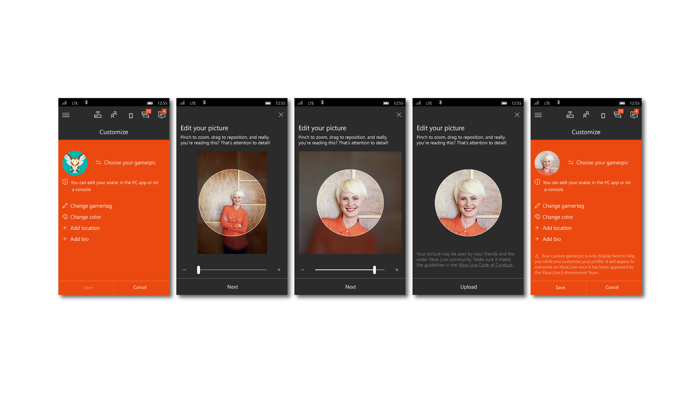
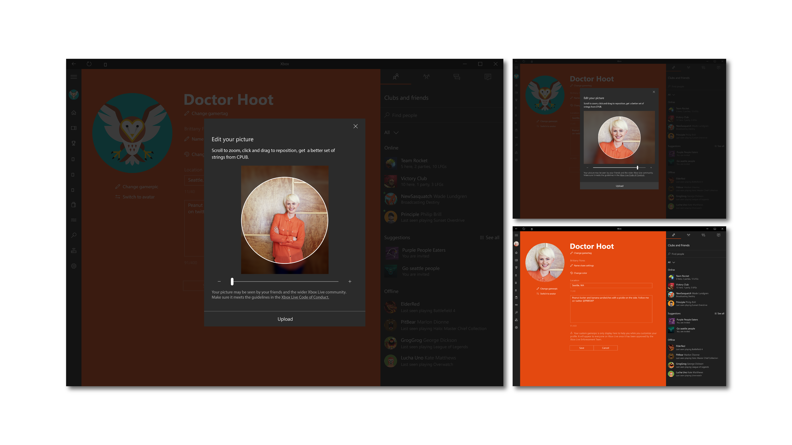
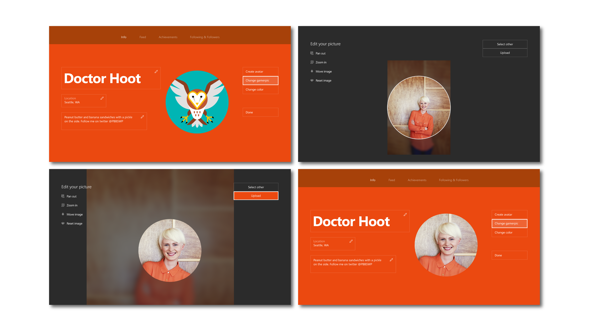
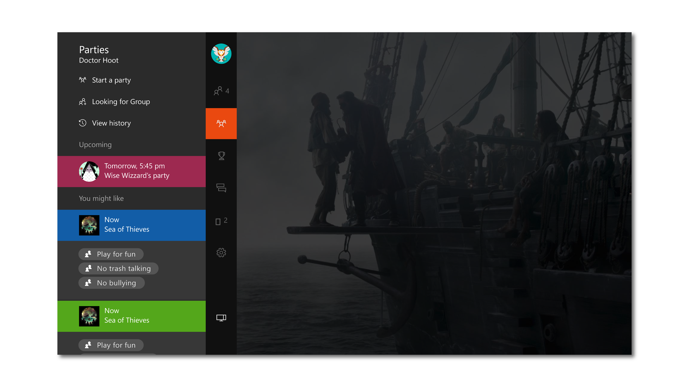
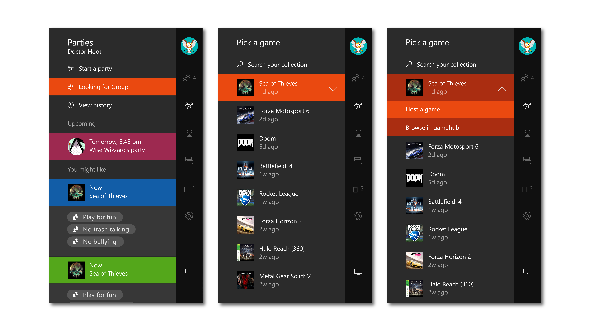
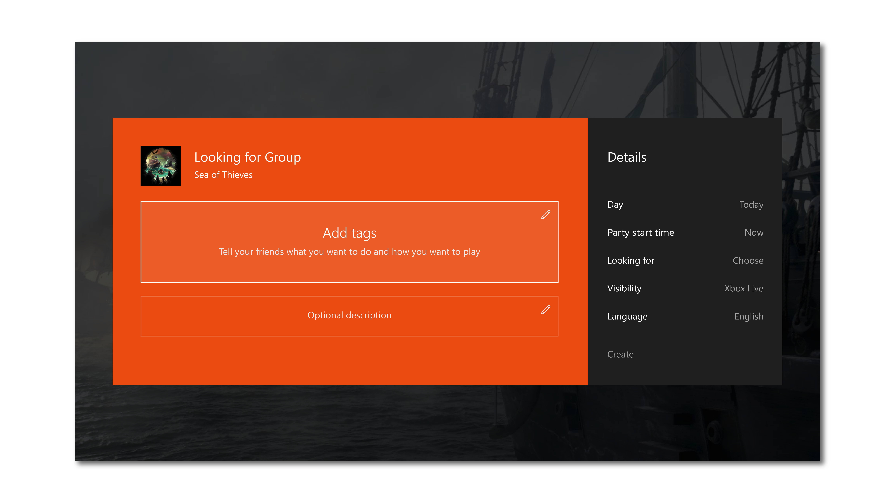
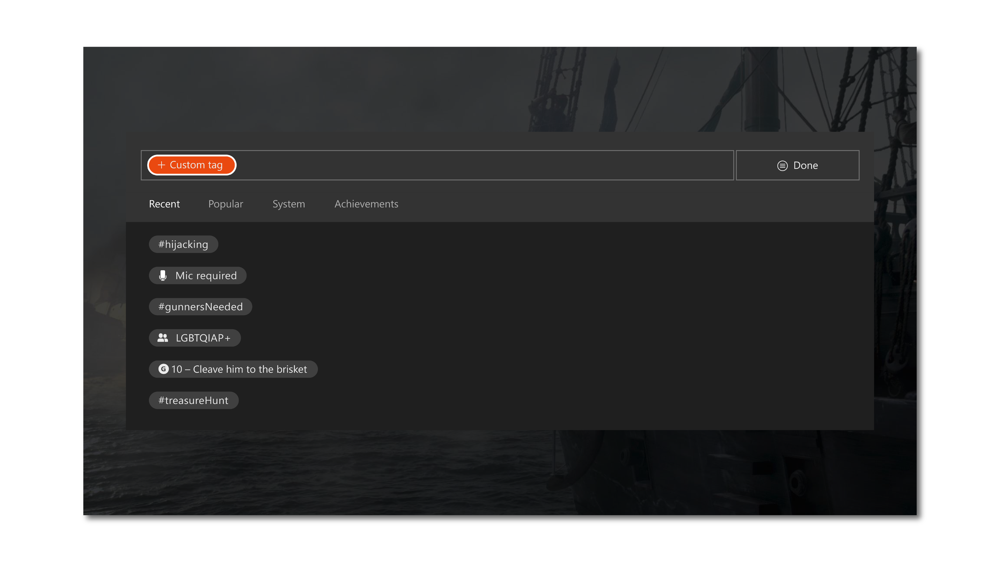
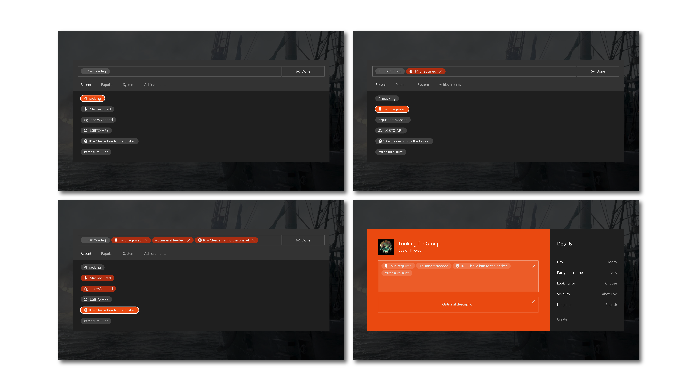
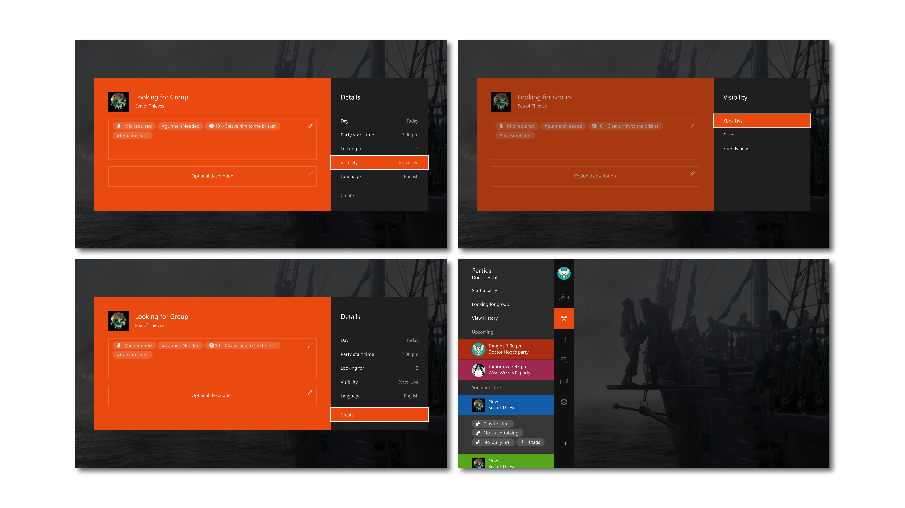

I had to opportunity to spend 18 months as a designer (contract) at the Xbox Design Studio in Redmond, Washington. I spent my time on the Production Design and Agile Design teams, working on a variety of Xbox features for the Xbox console (10’ experience), the Xbox app on PC desktops, and mobile apps for both Android and iOS.
During my time I primarily worked on production design and visual design, and regularly worked with UX designers, motion designers, developers (both front-end and back-end), and program managers (our internal stakeholders). Below are a few examples of work from my time there.
During my time I primarily worked on production design and visual design, and regularly worked with UX designers, motion designers, developers (both front-end and back-end), and program managers (our internal stakeholders). Below are a few examples of work from my time there.
This feature developed rather quickly - the program managers relayed how the back-end service worked, and we quickly worked out user flows. Taking into account the differences between the Xbox console, PC app, and mobile apps, I was able to complete the designs in a couple days. This work is representative of my time building features inside a fully developed and robust (and well documented) design system.
Looking for Group (LFG) is a social feature that allows gamers to find or create groups to play multiplayer games together. Instead of random matchmaking, gamers are able to find like-minded groups to play with - groups with not only similar goals or play styles, but a variety of self-identifying social groups, with a focus on inclusivity and anti-bullying.
My team’s primary responsibility was in adapting the designs for consistency across plat forms, as well as responding to changes either requested by program managers or necessitated by changes in back-end services.
One example is the tag picking modal for the Xbox console. I designed this with assistance from the development team, making decisions that allowed our team to re-purpose as much existing code as possible, leading to quicker builds for testing, and keeping us on track for release.
Some subtitle goes here yada yada isn't this a cool pic?